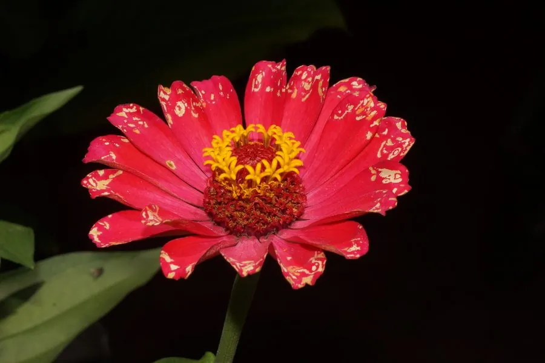

花卉与草本 · 植物界
百日草 Zinnia elegans

菊科一年生草本，花大色艳、花期长达百日，原产墨西哥，是夏秋花坛与切花的常见材料，也是世界著名的花坛花卉。
- 分类
- 门被子植物门纲木兰纲目菊目科菊科属百日菊属
- 栖息环境
- 墨西哥的干旱草原与山坡，喜温暖、阳光充足
- 地理分布
- 原产墨西哥，现世界各地栽培，中国南北各地花坛常见
- 保护级别
- 暂无评估
物种志
百日草为菊科百日菊属一年生草本，株高 30–100 厘米，茎直立粗壮，被短毛。叶片对生，卵形至披针形，基部抱茎，表面粗糙。头状花序单生茎顶，直径 4–10 厘米，舌状花扁平，有红、橙、黄、粉、紫、白等色，花期 6–10 月，果期 8–11 月。
百日草原产墨西哥，喜温暖、阳光充足的环境，耐干旱但怕酷热和积水，播种后约两个月即可开花。它的花期很长，可持续百日左右，因此得名；花后结出的瘦果呈瘦长楔形。百日草是世界重要的花坛和切花花卉，有高秆大花与矮生多花等不同类型，适合布置花坛、花境和盆栽。2016 年国际空间站的宇航员曾在轨培育百日草并成功开花，是太空植物栽培实验的明星物种之一。
形态与习性
- 株高30–100 厘米
- 花期6–10 月，单株花期可达 100 天
- 果期8–11 月，瘦果楔形
- 光照极喜光，光照不足易徒长
- 水分耐旱，忌积水
- 土壤疏松肥沃、排水良好的壤土
- 繁殖以播种为主
- 主要用途花坛、花境、切花
趣味知识
- 百日草花期可长达约 100 天，“百日”之名由此而来。
- 2016 年国际空间站的宇航员在轨培育百日草并成功开花。
- 头状花序上的舌状花颜色鲜艳，中央管状花则密集成盘。
- 高秆品种可作切花，矮生品种适合花坛和盆栽。